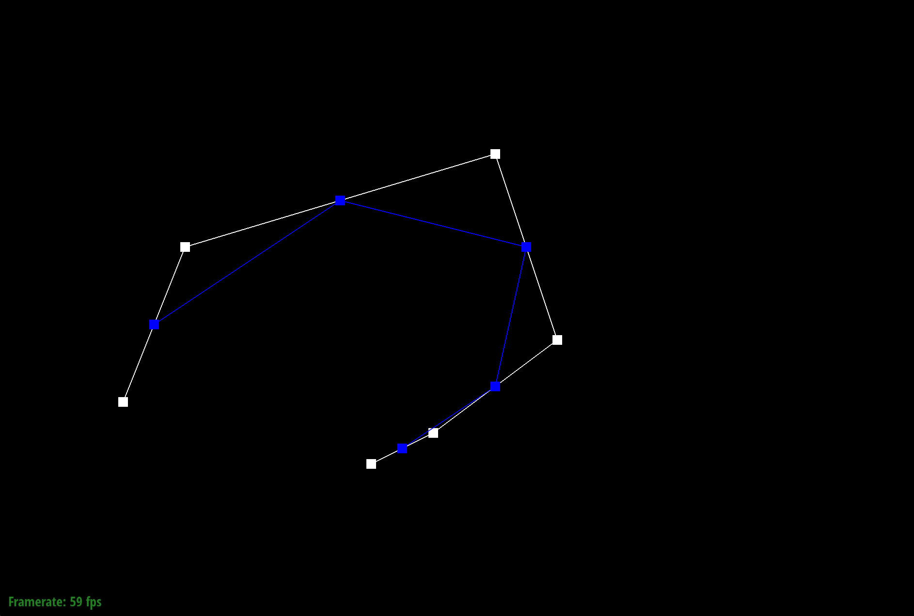
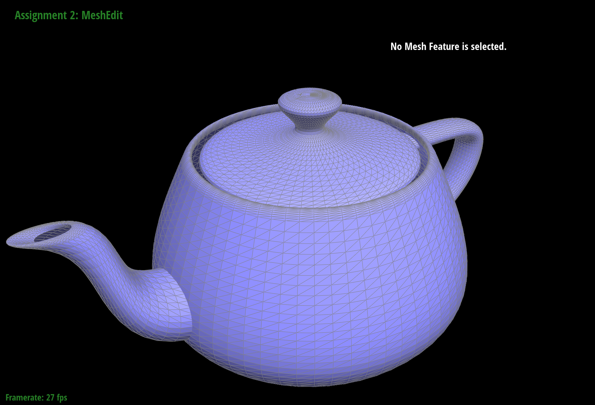
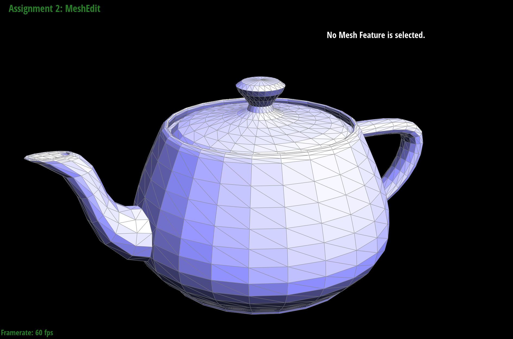
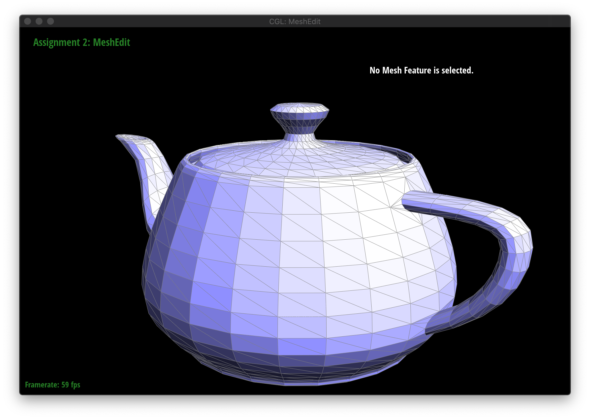

In this project, we compute Bezier Curve and Surfaces using de Casteljau's algorithm. In section II and III, we learn how to manipulate meshes, including computing average normal of meshes, performing half-edge flip and split. In the end, we perform loop subdivision for mesh upsampling.
de Casteljau's algorithm is an algorithm to smooth curves with n+1 control points. Basically, the algorithm reduce the n+1 control points by linear interpolate each pair of points recursively until only one point left. The only point is on the curve. By adjusting the parameter t, the only point traces a smooth curve.
In order to evaluate the Bezier curves, I fillout the evaluateStep function. In the function, we loop through all the control points and calculate intermediate points or the final interpolated vector, using the formula pi' = lerp(pi, pi+1, t) = (1-t)pi + tpi+1 .
The below figures show our own Bezier curve with 6 control points.
de Casteljau's algorithm extends to Bezier surfaces in a way that, de Casteljau's algorithm is ran on each row of control points. Each row of control points are reduced to a single point on the Bezier curve. The point is parameterized by u. For each point represented by each row, the set of points are passed into the de Casteljau's algorithm to reduce to the final single point, parameterized by v.
In order to evaluate Bezier surfaces at point (u, v), we take the grid of control points. For each row of control points, we put them into the function evaluate1D to get the set of points on each row Bezier curve evaluated at u. evaluate1D function is recursively calling evaluateStep function until one point left. Then, we take the set of points and pass them again into the function evaluate1D evaluated at v.
To implement area-weighted vertex normals, we first take out the half edge corresponding to the current vertex. Then, we loop through all the neighboring vertices. Each pair of neighboring vertices with the current middle vertex form a triangle. The current vertex is connected with a fan of triangles. Area-weighted vertex normal is just sum of area of triangles times the normal of triangles. We compute the area of triangles by cross product edge vectors of a triangle (neighboring vertex1 - current vertex and neighboring vertex2 - current vertex). The norm of the resulting vector is area of parallelogram, so we divide by 2 to get the triangle area. To get the normal of the triangle, we normalize the resulting vector. In the end, we sum all triangle normals* their corresponding area, then normalize.
To implement edge flip, we need to take the neighboring triangles and their elements into consideration.
Before making any changes, we traverse every half-edges, vertices, edges, and faces in the neighboring triangles, and store them respectively. It's better to draw a graph on a piece of draft paper and label each element correspondingly, so that when we are changing any pointers when flipping, we can visually inspect the new relations among elements, and it's easier to debug with a labeled graph.
Since flipping an edge does not create or delete any existing element, what we need to do next is to carefully reassign every pointer for each element, no matter it's been changed or not. We can proceed by first drawing out the graph after flipping the edge along with labels, then set each pointer correctly according to the new graph. The over process is a little bit mechanical, but taking the shortcut by using Halfedge::setNeighbors(...) saves a lot of time.
Overall, we performed a constant amount of work: we traversed 10 half-edges, 4 vertices, 5 edges, and 2 faces, and looped through them again for setting up their pointers correctly.
Here are some images on teapot.dae for edge flip operations:
To implement edge split, just like edge flip, we need to take the neighboring triangles and their elements into consideration. The difference is that now we creates new elements in the mesh, while the main structure remains alike.
Before making any changes, we traverse every half-edges, vertices, edges, and faces in the neighboring triangles, and store them respectively. It's better to draw a graph on a piece of draft paper and label each element correspondingly, so that when we are changing any pointers when splitting, we can visually inspect the new relations among elements, and it's easier to debug with a labeled graph.
Then comes the part that is different to flip: we create 6 new half-edges, 1 new vertex, 3 new edges, and 2 new faces. The numbers here do not look intuitively correct at first, and that is due to the fact that we are reusing existing elements and reassigning them. Therefore, we come down to the numbers above.
The last step is to carefully reassign every pointer for each element, no matter it's been changed or not. We can proceed by first drawing out the graph after splitting the edge along with labels, then set each pointer correctly according to the new graph. Beware that we need to assign a position to the new vertex, which will be the average of the positions of the two vertices of the original edge. The over process is a little bit mechanical, but taking the shortcut by using Halfedge::setNeighbors(...) saves a lot of time.
Overall, we performed a constant amount of work: we traversed 10 half-edges, 4 vertices, 5 edges, and 2 faces, created 6 new half-edges, 1 new vertex, 3 new edges, and 2 new faces. Then, we looped through all of them to set up their pointers correctly.
To implement loop subdivision, we performed the following 5 steps:
First, we compute the new position for each old vertex by iterating over all of them. We implemented a helper method Vector::computeCentroid() that stores the average position of neighboring vertices into its Vector3D Vertex::centroid, which is handy for computing the new position for existing vertices. We store the new position in Vector3D Vertex::newPosition before actually updating, since we still need the original position for computation. At the same time, we update the bool Vertex::isNew flag to indicate that this vertex is an existing one.
Then, we compute the positions for new vertices by traversing existing edges and storing the new position for the vertex that will be created due to splitting on that edge in Vector3D Edge::newPosition, so that we can refer to it later when creating the vertex.
Afterwards, we loop through all existing edges and split them. Since every new edge is automatically appended to the edge list of the mesh, we will fall into an infinite loop if we simply loop through the edges. Due to the fact that every new edge is appended to the end of the list, we can make use of this feature by recording the number of edges in the original mesh, and iterate that many times in the list. This will guarantee that we only split existing edges in the mesh, not newly created ones. We also retrieve the new position of the newly created vertex from the edge and store it into Vector3D Edge::newPosition of the new vertex, and set the flag to indicate that the vertex is newly created. We also need to update some edges to indicate that they are newly created according to how we implemented edge split.
Once we have splitted all the edges, we need to flip the ones that are new and connects an old and a new vertex. Since flipping edges does not create new edges, it is safe to simply iterate through the edges list now. We use an XOR operator to check if the above connectivity condition is satisfied, and flip the edge accordingly.
Finally, we can iterate through all the vertices and update the positions after upsampling!
We can clearly see that meshes become smoother and more continuous after several loop subdivisions, and sharp corners and edges are rounded into a curve. We can preserve the sharp edges and corners by splitting the edge that we do not wish to round up after upsampling, and then split the new edges that are intersecting the original edge repeatedly before loop subdivision to preserve sharpness. We will demonstrate this with dae/cube.dae:
After performing several loop subdivisions on dae/cube.dae, we can see that the cube becomes slightly asymmetric. This is because the diagonals of the surfaces is not symmetric, and edges guide the direction of loop subdivision, which will result in asymmetric cube upsampling. To eliminate the effect, we can split all diagonals on the surface of the cube, so that the triangles are now symmetric. Pre-processing changes the edges of the model, which we can think of changing how we direct the new vertices according to the edges, since the edges are used in computing the geometric location of a new vertex.
If you are not participating in the optional mesh competition, don't worry about this section!